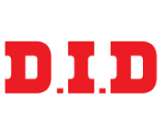
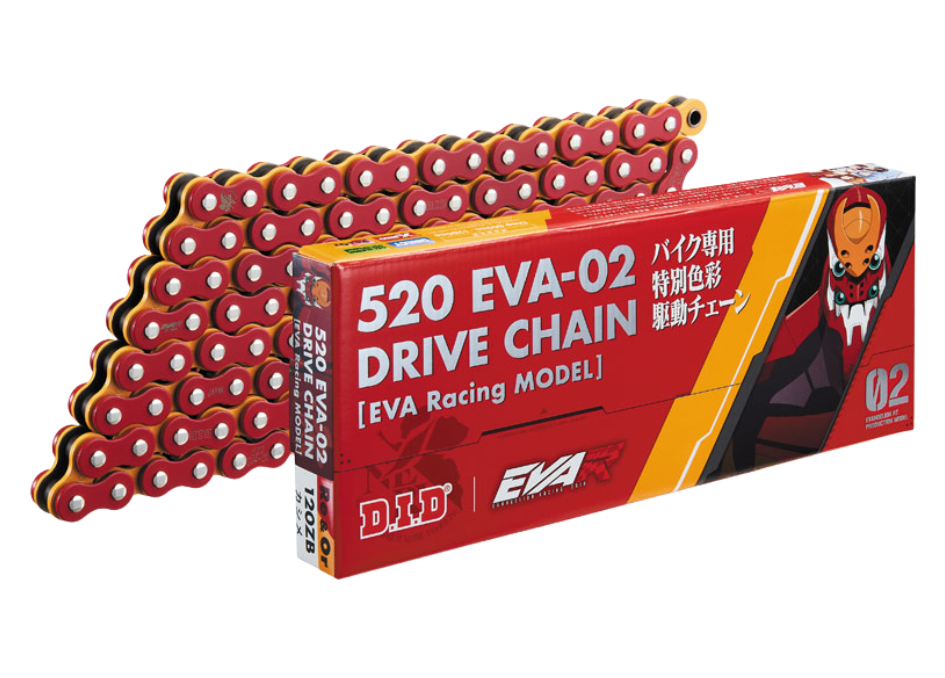
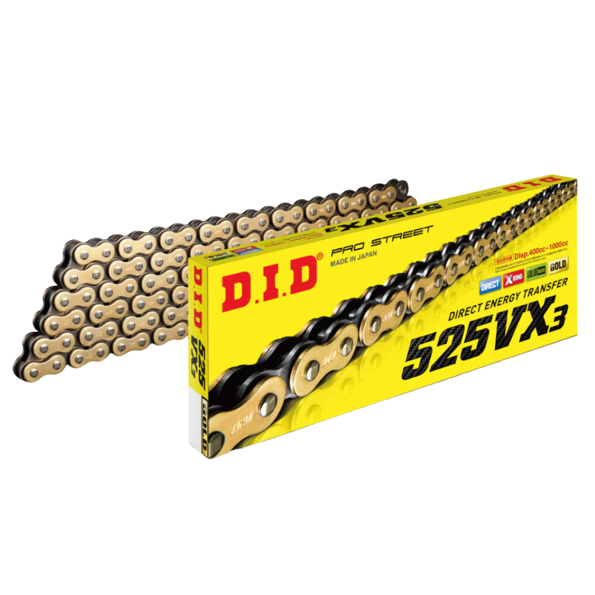
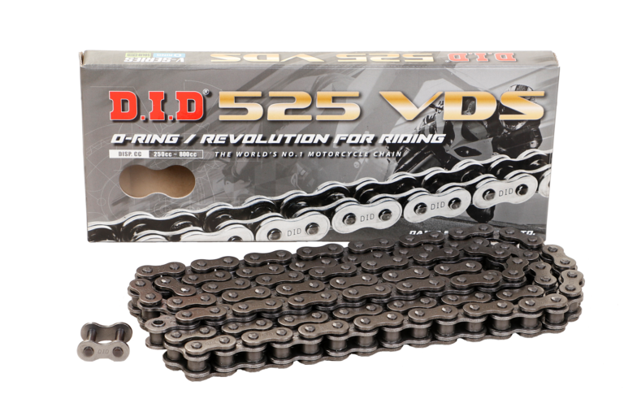
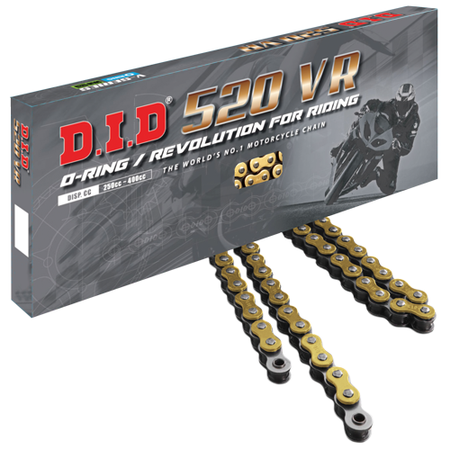

Motorcycle Chainhigh-quality motorcycle components Designed for performance. $750 |
V Series (X-Ring Chains)high-quality Original Equipment Designed for performance. $800 |
525 VDS (O-RING) - STEELLess Friction Reduce wear rate noise Better grease retention Long service life Solid Bush Suitable for Big bikes (Displacement 250~ 800 cc) $500 |
520 VR (O-RING) - GOLDLighter in weight, can generate accelerations quickly Withstands motorcycle force surges Suitable for Big bikes (Displacement ~ 400 cc) $500 |